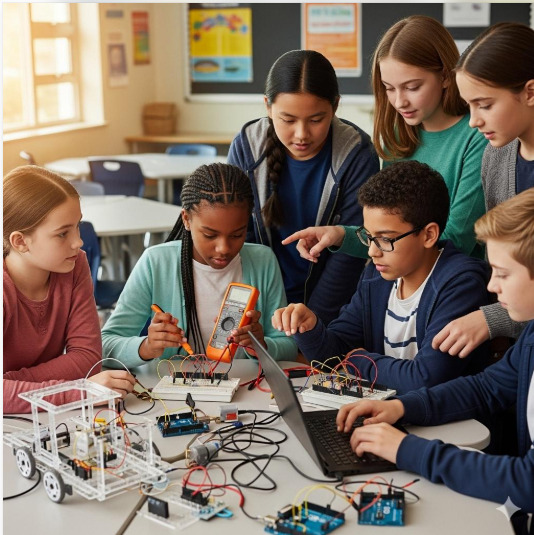
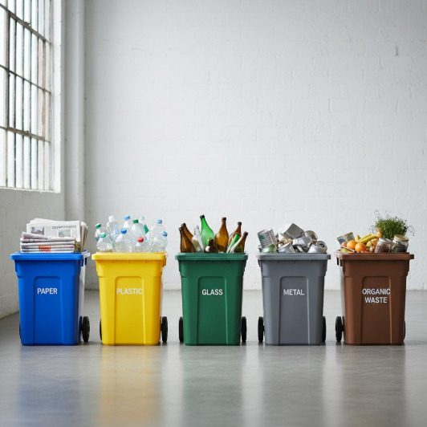

03 / PROYECTOS STEAM
La creatividad transforma ideas en soluciones.
Descubre proyectos que integran ciencia, tecnología, ingeniería, arte y matemática para resolver desafíos del entorno.
Un espacio para aprender sobre la clasificación de residuos, descubrir proyectos STEAM y compartir ideas para construir una institución más consciente y sostenible.
Conocer EcoBot →Aprender a clasificar los residuos es el primer paso para construir espacios más limpios y responsables.

Conocer los diferentes tipos de residuos y aprender a separarlos correctamente permite reducir la contaminación y fomentar hábitos responsables dentro y fuera de nuestra institución.
Consultar con EcoBot →Promover una cultura ambiental significa desarrollar conciencia, adoptar buenas prácticas y participar activamente en el cuidado de nuestro entorno natural.
Aprende con EcoBot →La educación también es un espacio para experimentar, investigar y desarrollar soluciones creativas.

Descubre proyectos que integran ciencia, tecnología, ingeniería, arte y matemática para resolver desafíos del entorno.
Explora nuevas herramientas, inteligencia artificial y recursos tecnológicos que impulsan la educación.
Escribe tu pregunta y descubre todo lo que puedes aprender con nuestro asistente.
Educación, innovación y sostenibilidad para construir un futuro mejor.